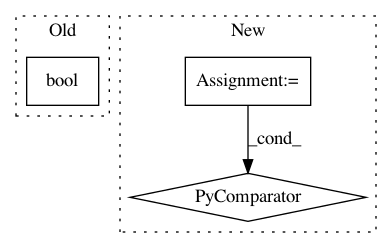

4f806cf7805b570f98334ac7e1bace2a8c94a9a6,networkml/featurizers/funcs/host.py,Host,_get_nonpriv_ports,#Host#Any#Any#Any#,211
Before Change
def _get_nonpriv_ports(self, rows, ip_proto, suffix):
nonpriv = int(bool(rows and self._nonpriv_ip_proto_ports(rows, ip_proto)))
return [{"tshark_nonpriv_%s_ports_%s" % (ip_proto, suffix): nonpriv}]
After Change
def _get_nonpriv_ports(self, rows, ip_proto, suffix):
nonpriv_ports = self._nonpriv_ip_proto_ports(rows, ip_proto)
return [{"tshark_%s_nonpriv_port_%s_%s" % (ip_proto, port, suffix): present
for port, present in nonpriv_ports.items()}]
def tshark_nonpriv_tcp_ports_in(self, rows):
In pattern: SUPERPATTERN
Frequency: 3
Non-data size: 3
Instances
Project Name: CyberReboot/NetworkML
Commit Name: 4f806cf7805b570f98334ac7e1bace2a8c94a9a6
Time: 2020-02-28
Author: josh@vandervecken.com
File Name: networkml/featurizers/funcs/host.py
Class Name: Host
Method Name: _get_nonpriv_ports
Project Name: home-assistant/home-assistant
Commit Name: 4ad4d74ed4a572ed2762c70900bc65fd9a1ba530
Time: 2015-09-16
Author: paulus@paulusschoutsen.nl
File Name: homeassistant/util/package.py
Class Name:
Method Name: check_package_exists
Project Name: etal/cnvkit
Commit Name: d716eeb5c90e109bad6517376a2f2ed78da6288b
Time: 2015-05-01
Author: eric.talevich@gmail.com
File Name: cnvlib/commands.py
Class Name:
Method Name: _cmd_batch